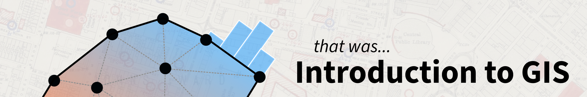

Summary
Closing remarks

Introduction to GIS is over! After 12 weeks of learning and effort, I hope that you are:
excited about continuing your GIS journey in future academic years.
aware of the many possibilities of GIS, and the range of applications across both Physical and Human Geography.
have the ability to perform some introductory but powerful spatial queries and analyses.
can produce high quality maps and visualisations.
Acknowledgements
The development of Introduction to GIS has benefited from discussions with Jonny Huck and Sarah Lindley, testing by James Tomlinson and Sneha Mendiratta and wider support from the Mapping, Computing and Geographical Information Science research group.
I hope that Introduction to GIS has inspired you to explore GIS further, and if so, I’d recommend continuing your GIS journey with Spatial Thinking with GIS in Year 2 and Understanding GIS in Year 3, and delving into the wider literature included in the reference list. We also offer an MSc in Geographic Information Science, which is an excellent preparation for a career in research or industry.
Enjoy!
Matt